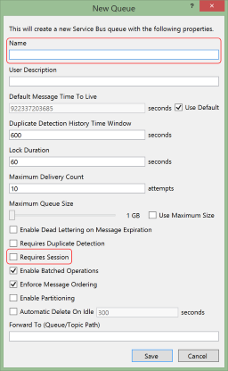
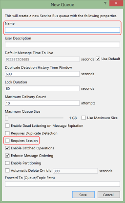

About Azure Service Bus
This article is not meant to replace the reams of documentation available on Azure or MSDN, but give a quick guide on how to get up an running with service bus for the purposes of FSharp.CloudAgent, and how to map Azure Service Bus concepts to F# Agents.
Note: if you do not want to use Azure, you can self-host using the Windows Service Bus. Read through this article first as the principles are the same, and then read that one for installation guidance.
Azure Service Bus Overview
Azure Service Bus provides a simple and cheap distributed messaging framework that runs in the Azure cloud. It comes in several flavours - the part that CloudAgent harnesses is that of Service Bus Queues, which provides reliable messaging through storage-backed queues in Azure that can have multiple consumers. In the context of CloudAgent, each consumer is a worker node i.e. .NET process that runs a number of F# agents to process messages. CloudAgent manages the lifetime of agents as needed, handing out messages as they arrive to the agent pool for processing, as well as relaying completion messages back to the Service Bus from agents.
Service Bus Queues key concepts
Within the context of CloudAgent, Service Bus Queues provide the following key features: -
- Reliable. Service Bus Queues guarantee message delivery to and processing by consumers. If a message is not completed within a specified timeout, it is made available for processing again by another consumer. Thus, distributed message processing in CloudAgent takes the form of at-least-once processing; a message will be processed at least once, but depending on whether the consumer successfully "completes" the message, it may be re-processed by other consumers. Your agents should be written to handle messages in an idempotent manner, or at least detect repeat messages.
- High throughput. Supports up to 2k messages / sec per queue, with average latency of 20-25ms.
- Cheap. $0.01 per 10k messages.
- Sessionised. Service Bus Queues provide the ability to ensure sequential delivery of messages that are partitioned based on an arbitrary "SessionId". This forms the basis of Actor support within CloudAgent; an ActorKey is mapped to the SessionId of individual messages, thus ensuring that messages for the same Actor are delivered to the same consumer in sequence.
How to create a Service Bus Queue
Follow the guidance here to create a new service bus namespace. Once the namespace is created, you can generate a Queue through Visual Studio or in code.
 

It is important to understand that for Actor pools, you must turn on Session support when creating the queue; likewise for Worker pools, Session support must be turned off.